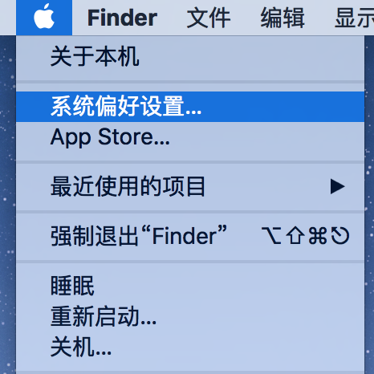
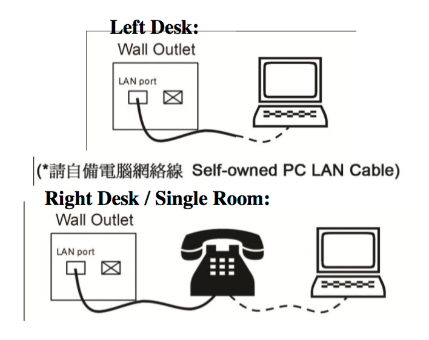

獲取你 PC 的 MAC 位址
按 Win + R 打開"運行"視窗.
鍵入"cmd"並按 Enter。

你應該會看到黑色的命令提示視窗。
按 Win + R 打開"運行"視窗.
鍵入"cmd"並按 Enter。
你應該會看到黑色的命令提示視窗。
在命令提示視窗中鍵入 getmac /v，然後按 Enter。 它應該返回你的網路介面卡清單。
Microsoft Windows [版本 10.0.10525] (c) 2015 Microsoft Corporation. All rights reserved. C:\Users\admin>getmac /v 连接名 网络适配器 物理地址 传输名称 =============== =============== =================== ========================================================== 以太网 Intel(R) PRO/10 00-1C-42-XX-XX-XX \Device\Tcpip_{5EB740D5-76B4-46D7-A93B-XXXXXXXXXXXX} C:\Users\admin>_
如圖所示，在清單中，找到"Ethernet"或"乙太網"或"乙太網絡"，其"物理位址"下的字串是你的 MAC 位址。 請把它記下來並檢查一遍!
打開終端（Terminal）。
鍵入 ifconfig 並按 Enter。
user@computer:~$ ifconfig eth0 Link encap:Ethernet HWaddr 00:1c:42:xx:xx:xx inet addr:10.111.111.111 Bcast:10.111.111.255 Mask:255.255.255.0 inet6 addr: fdb2:2c26:f4e4:0:xxxx:xxxx:xxxx:xxxx/64 Scope:Global inet6 addr: fdb2:2c26:f4e4:0:xxxx:xxxx:xxxx:xxxx/64 Scope:Global inet6 addr: fe80::21c:42ff:fe07:f6f8/64 Scope:Link UP BROADCAST RUNNING MULTICAST MTU:1000 Metric:1 RX packets:100 errors:0 dropped:0 overruns:0 frame:0 TX packets:101 errors:0 dropped:0 overruns:0 carrier:0 collisions:0 txqueuelen:1000 RX bytes:9314 (9.3 KB) TX bytes:15671 (15.6 KB) lo Link encap:Local Loopback inet addr:127.0.0.1 Mask:255.0.0.0 inet6 addr: ::1/128 Scope:Host UP LOOPBACK RUNNING MTU:65536 Metric:1 RX packets:100 errors:0 dropped:0 overruns:0 frame:0 TX packets:100 errors:0 dropped:0 overruns:0 carrier:0 collisions:0 txqueuelen:0 RX bytes:24050 (24.0 KB) TX bytes:24050 (24.0 KB) user@computer:~$
如圖所示，你的乙太網 MAC 位址應該是在"eth**"一項中，"HWaddr"的後面。 請把它記下來並檢查一遍!
看來，你的 Mac 設備沒有乙太網埠，需要一個配接器。 推薦你從 蘋果線上商店購買一個 Thunderbolt to Gigabit Ethernet Adapter。
或如果你有新的 MacBook，你需要一個蘋果 USB 乙太網配接器和 USB C 到 USB 配接器，帶來不便。 在這種情況下，我建議你在你的房間裡安裝 Wi-Fi。
打開系統偏好設置
選擇"互聯網"

插上你的外接 Thunderbolt 或 USB 乙太網配接器，然後你的配接器應該會出現在左側清單中。 選擇它。
從在左側的清單中選擇你的乙太網配接器（Ethernet Adapter）。

按右下角"高級..."按鈕。

在"硬體"選項卡中，你可以看到你的 MAC 位址。 請把它記下來並檢查一遍!
在城大校內找到有 Wi-Fi 的地方（通常 Common Room 即可）。 打開NCM網站 ( HTTPs://www6.cityu.edu.hk/ncm/) 並用城大EID和密碼登錄。

在左邊的功能表中選擇"Connection in Residence"。

網站應該要求你同意其條款。 如果你已閱讀並同意，打勾並繼續。
此時視窗右面應該有表單。

請確認你 "Residence Location" 和 "Contact Phone Number" 是正確的。
在 "Network Card Address" 中，填寫剛才查到的 MAC 位址並 仔細檢查。
| *Network Card Address: | - - - - - |
在 "Network Card Ownership" 部分中，選擇"Self-Owned"。
| *Network Card Ownership: |
在 "Outlet ID" 部分中，選擇你的床是在左邊還是右邊。
| * Outlet ID: |
在"Machine Type"部分中，選擇"PC"。
| *Machine Type: |
在 "OS Type" 部分中，選擇 隨便哪個 都不會影響申請聯網。 但為了方便，建議你選擇和你作業系統類型相同的" WINDOWS XP 7 WINDOWS 8 WINDOWS 10 WINDOWS MAC OS LINUX "。
在"Version"中，可以隨便填寫，並沒有影響。 例如，"10"。
| * OS Type: | Version |
"Remarks" 留空即可。
| Remarks: |
確認填寫了所有帶星號的專案並準確無誤後，點擊提交表單。
你將收到電子郵件，表示城大已收到你的申請。 你需要等待即可，一般不超過幾小時。
如果你沒有網線，可以考慮從好味廚買一根。
如果你的書桌上有電話，請連接網線的一頭到電話背面（確認電話和牆上的網線介面已經接好）。 如果不是電話一側，直接把網線一頭插在牆上的網線介面。
將網線的另一頭插入到你的 Thunderbolt 或 USB 轉接線上，並連接轉接線。
網線的另一邊插入到你電腦的網線介面。
幾小時後可以測試連接。
如果你有任何問題，請檢查故障診斷頁面。